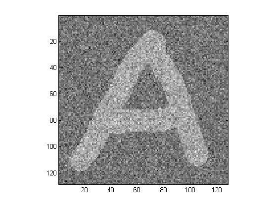
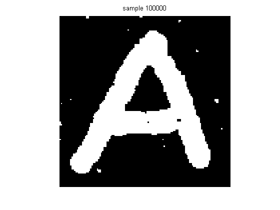

Denoising an Image Using Gibbs Sampling
Here we use an Ising Prior and a Gaussian likelihood.
% This file is from pmtk3.googlecode.com setSeed(4); sigma = 1; % noise level A = loadData('letterA'); y = A.AwithoutHole; %load('imageWithBlackHole.mat') % defines y %load('imageWithWhiteHole.mat') % defines y % observation model offState = 1; onState = 2; mus = zeros(1, 2); mus(offState) = -1; mus(onState) = +1; sigmas = [sigma sigma]; [M, N] = size(y); Npixels = M*N; localEvidence = ones(Npixels, 2); for k=1:2 localEvidence(:,k) = uniGaussPdf(y(:), mus(k), sigmas(k).^2); end guess = maxidx(localEvidence, [], 2); X = ones(M, N); X(guess==offState) = -1; X(guess==onState) = +1; Xinit = X; figure(); imagesc(y);colormap gray; axis square; fig = figure(); J = 5; avgX = zeros(M,N); X = Xinit; maxIter = 100000; for iter =1:maxIter % select a pixel at random ix = ceil( N * rand(1) ); iy = ceil( M * rand(1) ); pos = iy + M*(ix-1); neighborhood = pos + [-1,1,-M,M]; neighborhood([iy==1,iy==M,ix==1,ix==N]) = []; % compute local conditional wi = sum( X(neighborhood) ); if any(isnan(localEvidence(pos,:))) error('no evidence at %d, %d', ix, iy) end p1 = exp(J*wi) * localEvidence(pos,onState); p0 = exp(-J*wi) * localEvidence(pos,offState); prob = p1/(p0+p1+eps); if rand < prob X(pos) = +1; else X(pos) = -1; end avgX = avgX+X; % plotting if rem(iter,10000) == 0, figure(fig); imagesc(X); axis('square'); colormap gray; axis off; title(sprintf('sample %d', iter)); % end end 